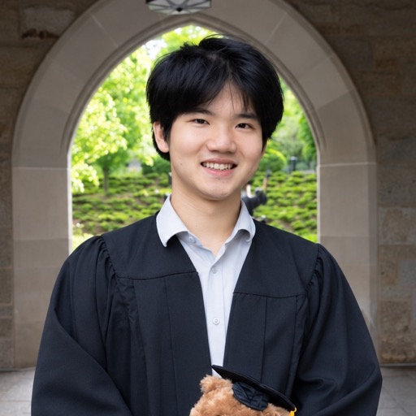

Lab Members

PhD Students

Claire Yang
My research spans human-robot interaction, artificial intelligence, and alignment, with applications to both embodied and virtual AI systems. I am particularly interested in the key challenges in aligning agentic/robotic assistance with users' goals. This broadly encompasses learning human preferences, investigating intrinsic motivation objectives for assistive agents, and developing shared autonomy systems that balance robotic assistance with user control.
Website
Kunal Jha
My research broadly looks for common computational principles of (collective) intelligence and agency across human minds and machines. I investigate what learning algorithms, predictive representations, and environmental pressures give rise to the emergence of sophisticated social behaviors from chaotic systems. Specifically, I am interested in the role of time in multi-agent settings: when agents are constrained by the amount of time they have to reason, plan, and learn, how can they successfully interact in a world much more complex than their own cognition?
Website
Doris Yu
I’m interested in how people make decisions in social environments. My research combines behavioral science with computational approaches, using reinforcement learning models to understand the cognitive processes underlying judgment and choice. I’m particularly interested in how people plan when they collaborate or compete with other, how they coordinating with teammates, predicting rivals’ moves, or navigating the complex social dynamics that shape everyday decisions.

Thomas Lily
My primary research interest lies at the intersection of quantitative marketing, social media, and machine learning, focusing on how digital creators navigate algorithmically mediated platforms. How do creators learn to make strategic decisions about content, promotion, and audience growth? I am also interested in examining how creators choose collaborators and how platform monetization strategies shape creator and audience behavior.

Hanny Guan
My research examines how consumers perceive, seek, and relinquish decision control and autonomy when making joint purchase decisions. Before joining UW, I studied social psychology at the University of Florida (B.S.) and the University of Illinois at Urbana-Champaign (M.S.). I enjoy applying psychological theories and experimental methods to address issues concerning marketing practitioners and consumers.

Wenshuo Qin
I am interested in theory-driven and interpretable representations and inductive biases that enable human-like social intelligence. My past work has examined alignment at the perception level, identifying the structured representations that enable AI systems to more closely mirror human social judgments. Moving forward, I hope to extend this work to higher-level social reasoning, decision-making, and collaboration, while studying how these levels can be integrated to inform and constrain one another.
WebsiteIsabel MacGinnitie
I am broadly interested in research that promotes humanity's ability to learn, advance, and flourish in a world with transformative AI. In particular, I'm interested in how AI can assist human cooperation and moral progress, as well as cooperation and morality between AI agents.
WebsiteAlumni
Haoran Zhao (MS) → PhD student in Linguistics, UT Austin